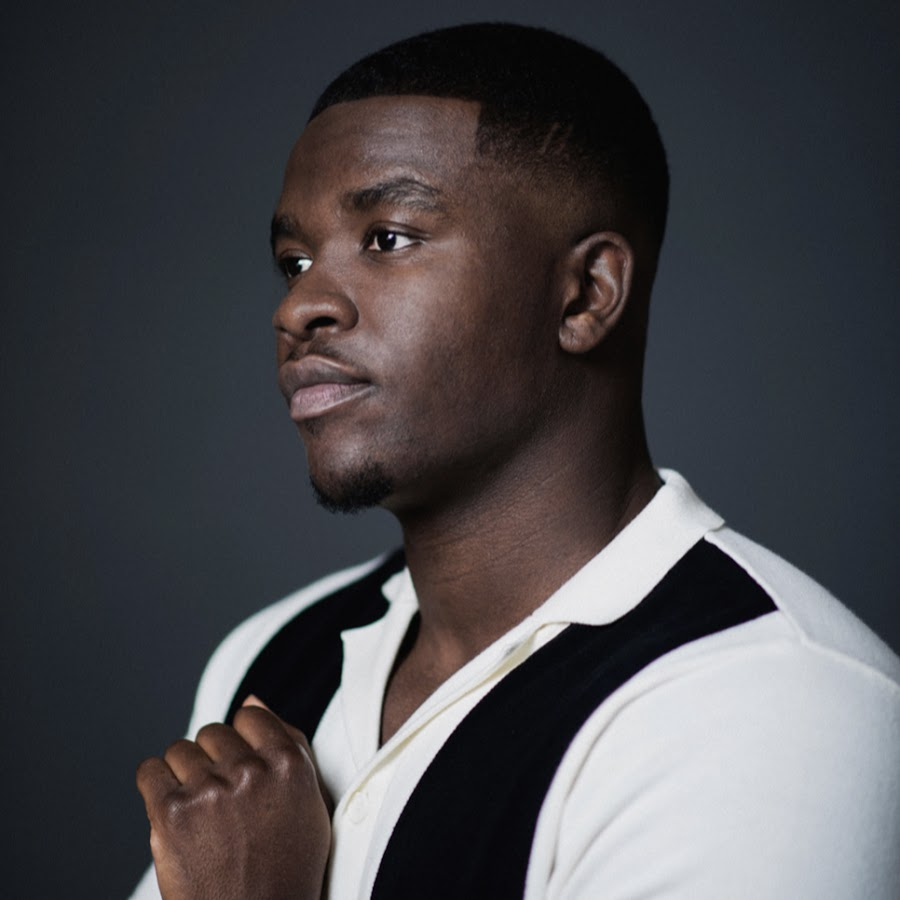

| Column 1 | Column 2 | Column 3 | Colum 4 |
|---|---|---|---|
|  | Michael Dapaah (born 10 August 1991) is a British actor, rapper, and comedian best known for portraying the fictional rapper Big Shaq (also known as Roadman Shaq). He is also known for his mockumentary SWIL (Somewhere in London), which focuses on four characters and their journey to success. |